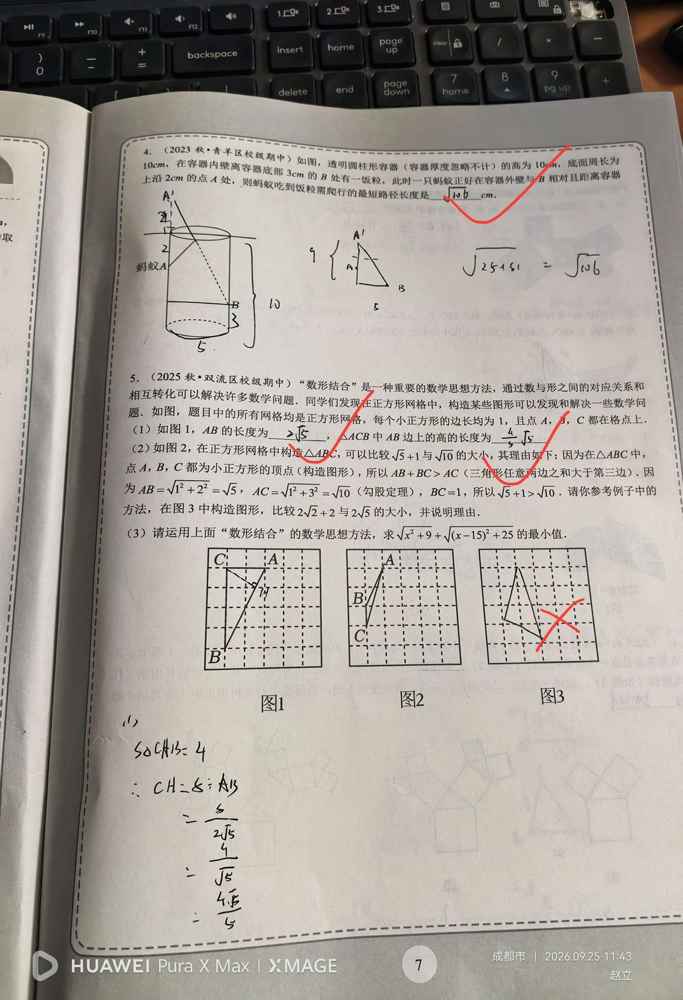

① 圆柱形容器高 10 cm；② 底面周长 10 cm；③ B 在内壁、离底 3 cm（⇒ 离上沿 7 cm）；④ A 在外壁、与 B【相对】、离上沿 2 cm（⇒ 离底 8 cm）。
求蚂蚁从 A 爬到 B 的最短路径长度。（参考值 5√2 ≈ 7.07 cm）
【展开法】 ① 沿过 A 的母线把圆柱侧面剪开摊平； ② 水平距离：A 与 B「相对」⇒ 相差半圈 ⇒ 10 ÷ 2 = 5 cm； ③ 垂直距离：A 离底 8 cm（10 − 2），B 离底 3 cm ⇒ 相差 8 − 3 = 5 cm； ④ 最短路径 = 展开图上的线段 = √(5² + 5²) = √50 = 5√2 cm。
① 把「相对」理解成「同一位置」⇒ 水平距离用了 0 或 10（应该是半周长 5）； ② 垂直方向只算一段：忘记 A、B 分别离底 8 cm 和 3 cm，差是 5（不是 10 − 3 = 7）； ③ 把「离上沿 2 cm」错当成「离底 2 cm」； ④ 内壁/外壁方向搞混，符号取反。
① 圆柱侧面展开图； ② 「相对」⇒ 半周长； ③ 高度方向的距离差计算； ④ 勾股定理 √(5² + 5²) = 5√2； ⑤ 空间最短路径的通用思路：展开 → 线段。 📌 出处：第二讲 勾股定理综合复习 第 4 题。页面上此题旁边有红勾（视为已过关），但若琳手写过程（√(25+61)）与上述标准解法不一致，建议重做一遍确认掌握。